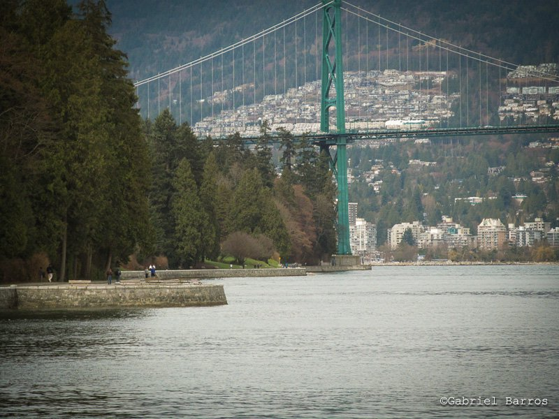
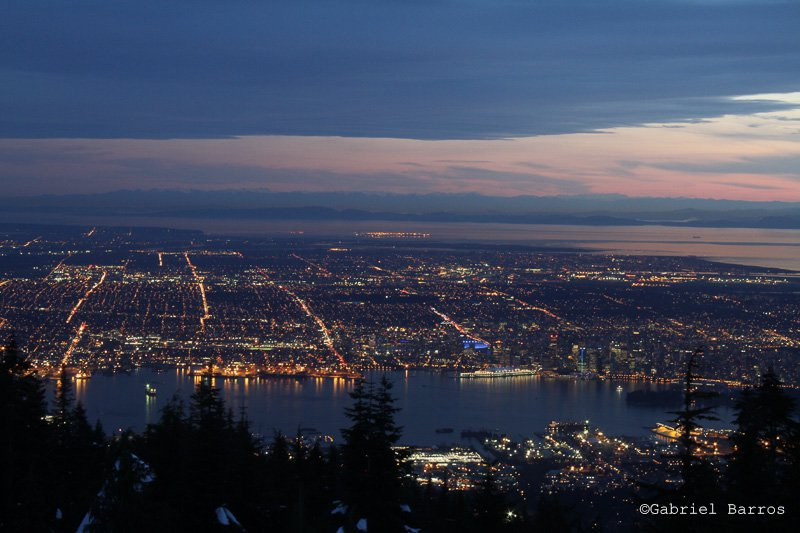

-
Vancouver - Toca do Felix.
-
Vancouver - Ponte, visão a Noite.
-
Linda vista de Vancouver.
Stanley Park

Stanley Park é considerado um dos maiores parques urbanos da america do norte, e o mais bonita do canadá, com belas paisagens, campos e lagos.
Grouse Montain

o Grouse Montain é considerado como umas das melhores vistas de vancouver, com visão privilegiada para a cidade, nela pode se observar quase toda a cidade.